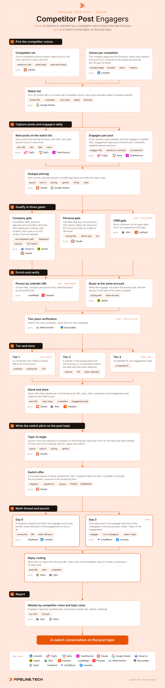

Competitor Post Engagers
Install the Pipeline.tech "Competitor Post Engagers" outbound play. Fetch https://raw.githubusercontent.com/pipeline-tech/plays/main/core/SKILL.md and https://raw.githubusercontent.com/pipeline-tech/plays/main/plays/competitor-post-engagers/SKILL.md, save them as ~/.claude/skills/pipeline-outbound-core/SKILL.md and ~/.claude/skills/pipeline-competitor-post-engagers/SKILL.md, then run /pipeline-competitor-post-engagers.

A competitor's posts pull in the people thinking about this exact problem today. By commenting or reacting they told you which part of it they care about, so the opener starts there and never mentions the act of watching. Pipeline.tech's book, The Outbound Playbook, lists LinkedIn engagement as the intent signal with the highest reply rates of any signal tool, because engaging with a post is a stated interest in the topic.
Load pipeline-outbound-core first. Where a step says "apply core", follow that section of the core skill.
Inputs
Ask for these before step 1, and save them to ./pipeline-plays.config.json:
- The ICP in one paragraph: industries, headcount band, geography, the problem you solve.
- The 3 to 6 competitors buyers name on sales calls.
- The seat that buys: exact titles and functions, with the seniority floor.
- Stack answers from core section 1, plus the real LinkedIn profile the DMs go out from.
- The switch offer in one sentence, one proof point, and which customers may be named in writing.
Steps
1Pick the competitor voices
- Start with the 3 to 6 competitors buyers name on sales calls; more dilutes the capture and the report.
- For each, list the company page plus the people who post for it: founders, execs with an audience, creators on partner content. The last 30 days of posts show who actually posts.
- Store 10 to 30 profile URLs in a sheet with competitor name, voice type and date added. Review monthly: drop quiet voices, add new ones.
2Capture posts and engagers daily
- Run the capture daily. Trigify first: it watches the profiles and returns posts and engagers with the engagement type. Apify or Teamfluence when the user already runs one.
- Store post URL, text, date, voice, engager LinkedIn URL, reaction or comment, comment text. Comments weigh more: a comment is a sentence about the topic, a reaction is a nod.
- Dedupe by post id and person. Three reactions on one competitor's posts is one row with three engagements, not three leads.
- A model tags each post with one topic class: launch, how-to, pricing, opinion, hiring, other. Hiring and other never drive copy.
3Qualify in three gates
- Company first. Remove anyone employed by a competitor, a partner or agency of one, or a recruiter. Then headcount, industry and location with Ocean.io or Apollo, and a yes or no ICP verdict from the website.
- Persona second. Keep the titles from input 3. People below the seat at an ICP account stay flagged as the path to the buyer in step 4. Students and vendors are out.
- CRM third. Apply core: exclusions. Log what each gate removed and why.
4Enrich and verify
- The LinkedIn URL is the key. Apply core: enrichment with the profile URL as the lookup, never name plus company; engager headlines are often stale.
- When the engager is below the buying seat at an ICP account, find the buyer at the same account per core section 4 and attach them to the row. The engagement belongs to the account.
- Apply core: verification.
5Tier and store
- Tier 1: a commenter with a buying title at an ICP account. Tier 2: a reactor in the buying seat at an ICP account, or a commenter below the seat with the buyer found. Tier 3: acceptable fit.
- Apply core: tiering. Two engagements on the same competitor inside 30 days, or an engagement plus another dated signal, moves the row up one tier.
- Write post URL, topic class, competitor, engagement type and date to the CRM record with the tier.
6Write the switch pitch on the post topic
- Apply core: copy and send rules.
- Open on the topic, never on the competitor's post or the engagement. Name it the way a peer in that seat would.
- Launch post: how your approach compares on the thing they launched, one specific difference. How-to post: the same job done simpler. Pricing post: the cost of staying another year. Opinion post: agree with the point and extend it into what you do differently.
- Tier 1 requires a switch offer in the first message: migration done for them, a parallel run, or a buyout of the remaining term. Features alone do not move anyone off a vendor they already pay.
- Draft one email variant per topic class plus a threaded nudge for email 2, and one DM under 300 characters per topic. Show the user before upload. Variables:
{TOPIC},{COMPANY},{TITLE}.
7Multi-thread and launch
- Day 0: a connection request with a short note and, on accept, a DM on the topic, from a real person's profile through HeyReach. Inside 48 hours of the engagement or skip the DM.
- Day 3: a two-step email to the engager plus one or two colleagues in the buying seat, from this play's own inbox set, email 1 inside 7 days of the engagement.
- Slack on every reply with the post URL, topic class and competitor. Stop on a reply, a booking or an open deal.
8Report
- Weekly: engagers captured, qualified rate, connection accept rate, replies, meetings, split by competitor voice and topic class, against the cold baseline.
- After a month, cut voices whose engagers rarely pass the gates and lean the copy toward the topics that book.
- Apply core: credits and handoff.
Guardrails
- Never say you saw them engage. No "saw your comment", no "noticed you liked".
- Skip posts about layoffs, personal news or grief, and every engager on them.
- Competitor staff are never contacted, nor their partners or agencies.
- One person at most once per 60 days across all social plays.
- Scope: this play is engagers on posts by competitor voices (their company page, founders, execs, creators who post for them). Engagers on your own, your team's or chosen creators' posts belong to Content Engagement; posts about your brand, competitors or the category pain written by third parties belong to Brand and Keyword Mentions.
- DM window 48 hours, email window 7 days. An older engagement is stored for stacking, never named in copy.
Example run
User: "/pipeline-competitor-post-engagers for our sales engagement platform, B2B SaaS 50 to 500 people in North America, buyers VP Sales and Head of RevOps, competitors the four we lose to most"
- Asked for the four competitors and the switch offer (migration in 10 business days plus a parallel run); confirmed Trigify, Attio, EmailBison, HeyReach and Slack.
- Watch list: 4 company pages plus 17 people, 21 voices.
- Week one: 46 posts, 2,140 engagements (1,880 reactions, 260 comments), 1,712 people; 9 launch, 14 how-to, 3 pricing, 12 opinion, 5 hiring, 3 other.
- Gates: 214 removed as competitor staff, partners or recruiters; 611 at ICP-fit companies; 188 in the buying seat plus 97 below it; 23 out at the CRM gate; 262 through.
- 231 emails found by LinkedIn URL, 84 buyers attached to below-seat engagers; 289 valid, 14 catch-all in their own campaign.
- 31 Tier 1, 143 Tier 2, 88 Tier 3.
- 174 connection requests inside 48 hours, 71 accepted, 64 DMs. 303 addresses loaded into "Competitor Engagers, November", four topic variants approved.
- First weekly read: 19 replies, 7 interested, 4 meetings, 3 from how-to and pricing posts by one competitor's founder.